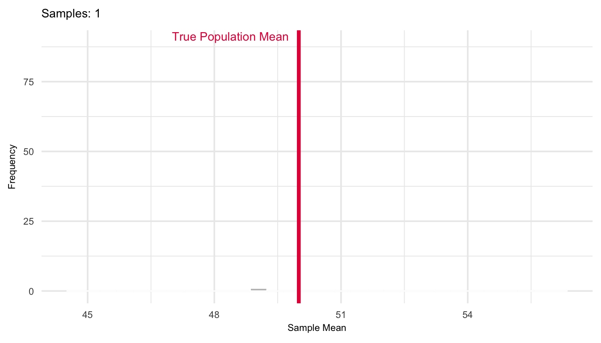
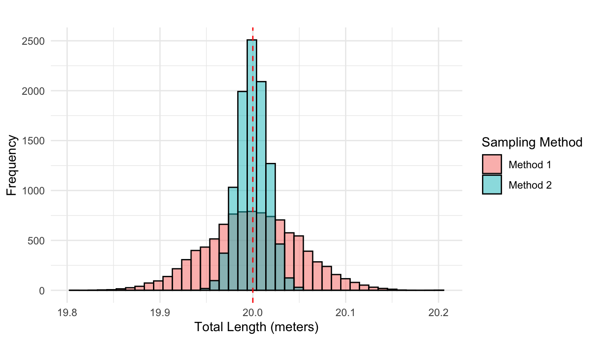

17 Sampling Distributions for a Sample Mean
The sample mean \(\bar{X}\), when calculated from a random sample, is itself a random variable whose distribution reflects the variability inherent in the sampling process. This distribution, the sampling distribution of the sample mean, has an expected value equal to the true population mean \(\mu\), and its variance is given by \(\sigma^2 / n\), where \(\sigma^2\) is the population variance and \(n\) is the sample size. Consequently, the standard error of the mean, defined as \(\sigma / \sqrt{n}\), quantifies the typical deviation of the sample mean from the population mean across repeated samples. Understanding this sampling distribution is essential for inferential statistics, whether we are constructing confidence intervals, performing hypothesis tests, or quantifying the uncertainty associated with point estimates.
17.1 The Sample Mean as a Random Variable
Suppose we plan to collect a random sample of size \(n\) from a population with mean \(\mu\) and variance: \(\sigma^2\). Let \(X_1, X_2, \dots, X_n\) represent the values we observe in that sample. We assume independent and identically distributed (i.i.d.) random variables, that is:
- The variables \(X_1, X_2, \dots, X_n\) are independent,
- Each \(X_i\) follows the same distribution (i.e., they are identically distributed)
The sample mean \(\bar{X}\) is defined as: \[ \bar{X} = \frac{X_1 + X_2 + \cdots + X_n}{n} = \frac{1}{n} \sum_{i=1}^n X_i \]
Although we treat \(\bar{X}\) as a numerical quantity once the sample is collected, in theory it is itself a random variable; its value depends on which sample we happen to get and the observations within the sample.
The distribution of \(\bar{X}\) across all possible random samples is called the sampling distribution of the sample mean. Each time we take a random sample from the population, we compute a sample mean. If we were to repeat the sampling process many times, we would get different values of \(\bar{X}\). The distribution of these values, one for each possible sample, forms the sampling distribution of the sample mean.
This distribution tells us:
- What values the sample mean might take,
- How much it tends to vary from sample to sample,
- How close we can expect it to be to the population mean.
17.2 Properties of the Sampling Distribution
Let \(X_1, \dots, X_n\) be an i.i.d. sample from a population with mean \(\mu\) and variance \(\sigma^2\). Then the sample mean \(\bar{X}\) has:
- Expected value (mean):
\[ E(\bar{X}) = \mu \]
Variance: \[ \operatorname{Var}(\bar{X}) = \frac{\sigma^2}{n} \]
Standard deviation:
\[ \operatorname{SD}(\bar{X}) = \frac{\sigma}{\sqrt{n}} \]
This standard deviation is known as the standard error of the mean.
The more observations we average together, the less variability we expect in the result. A single observation \(X\) has variance \(\sigma^2\), but the mean of \(n\) i.i.d. observations spreads out less, its variance shrinks by a factor of \(1/n\). This is why increasing the sample size gives more precise estimates of the population mean. This is illustrated in Figure 17.1 where a simulation of the sampling distribution of the mean shown for a population with mean 50 and variance 100. The plot shows how the distribution evolves as the number of repeated samples of size \(n = 30\) goes from 10 to 1000.
Why does this happen? Since the sample mean is a linear combination of independent, identically distributed random variables:
- Independence means the variances add.
- Identical distribution means they each have the same mean and variance.
Using the linearity of expectation, we find:
\[ \begin{split} E(\bar{X}) &= E\left( \frac{1}{n} \sum_{i=1}^n X_i \right) \\ &= \frac{1}{n} E\left( \sum_{i=1}^n X_i \right) \\ &= \frac{1}{n} \sum_{i=1}^n E(X_i) \\ &= \frac{1}{n} \sum_{i=1}^n \mu_X \\ &= \frac{n \cdot \mu_X}{n} \\ &= \mu_X \end{split} \]
This confirms that \(\bar{X}\) is an unbiased estimator of the population mean \(\mu_X\) (in the long run, we hit the target). Assuming independence, the variance of the sum is the sum of the variances. Therefore:
\[ \begin{split} \operatorname{Var}(\bar{X}) &= \operatorname{Var} \left( \frac{1}{n} \sum_{i=1}^n X_i \right) \\ &= \frac{1}{n^2} \operatorname{Var} \left( \sum_{i=1}^n X_i \right) \\ &= \frac{1}{n^2} \sum_{i=1}^n \operatorname{Var}(X_i) \quad \text{(independence)} \\ &= \frac{1}{n^2} \sum_{i=1}^n \sigma_X^2 \\ &= \frac{1}{n^2} \cdot n \cdot \sigma_X^2 \\ &= \frac{\sigma_X^2}{n} \end{split} \]
The variance of the sample mean thus shrinks with larger sample sizes, reflecting increased precision. The square root of the variance of the sample mean is known as the standard error of the mean:
\[ \text{SE}(\bar{X}) = \frac{\sigma_X}{\sqrt{n}} \]
This measures how much the sample mean is expected to vary from sample to sample. It decreases as \(n\) increases, giving tighter estimates of the population mean with larger samples. Together, these results imply that \(\bar{X}\) is not only unbiased, but also a consistent estimator of \(\mu_X\). That is: \[ \bar{X} \xrightarrow{P} \mu_X \quad \text{as } n \to \infty \]
This convergence in probability follows from the Law of Large Numbers: as the sample size grows, the probability that the sample mean deviates significantly from the true mean approaches zero. We will return to these concepts in mroe detail later in the book.
Example 17.1: Which Sampling Method Gives a More Accurate Total?
In the production of construction elements, the lengths of individual parts vary slightly due to randomness in the manufacturing process. These variations can be modeled as outcomes from independent and identically distributed random variables with:
- Mean (expected length): \(\mu = 2\) meters
- Standard deviation: \(\sigma = 0.005\) meters (i.e., 5 mm)
Suppose we need ten elements that together should sum to exactly 20 meters. We consider two alternative methods to select these:
Method 1: Randomly select one element, then cut or grind the remaining nine so that all ten elements match the length of the first.
Method 2: Randomly select ten elements independently from the production line.
The question is: Which method gives a total length closer to the desired 20 meters on average?
Let’s analyze the variance of the total length under each method:
Method 1
All ten elements are set to the same length, which is a single random realization of one element \(X\). So the total length is: \[
L_1 = 10X
\]
Then the variance of the total length is: \[ \operatorname{Var}(L_1) = \operatorname{Var}(10X) = 100 \cdot \operatorname{Var}(X) = 100 \sigma^2 \]
Method 2
Each element is chosen independently: \(X_1, X_2, \dots, X_{10}\). The total length is:
\[ L_2 = X_1 + X_2 + \dots + X_{10} \]
Then the variance of the total length is:
\[ \operatorname{Var}(L_2) = \sum_{i=1}^{10} \operatorname{Var}(X_i) = 10 \sigma^2 \]
Both methods are unbiased: in expectation, the total length is \(E(L) = 10 \cdot \mu = 20\) meters.
However, Method 2 has significantly lower variance (the total variance is ten times smaller under Method 2 than Method 1), meaning the total length will more reliably fall close to 20 meters. This is visulalized in Figure 17.2.

The general insight from above example is as follows. If we randomly select a single unit from a population, its expected value is \(\mu\), and it deviates from the mean on average by \(\sigma\). If we instead select a sample of \(n\) units, the sample mean \(\bar{X}\) is still centered around \(\mu\), but the deviations tend to cancel out. Thus:
\[ \text{Standard deviation of } \bar{X} = \frac{\sigma}{\sqrt{n}} \]
This demonstrates the variance-reducing power of averaging, and illustrates why using independent samples yields more reliable estimates; a key motivation behind the sampling distribution of the mean.
17.3 Normal Distribution of the Sample Mean
If the variable of interest \(X\) is itself normally distributed, then the sample mean \(\bar{X}\) is also normally distributed, regardless of the sample size. Formally, if:
\[ X \sim \mathcal{N}(\mu_X, \sigma_X) \]
then for any sample size \(n\), the sample mean follows:
\[ \bar{X} \sim \mathcal{N} \left( \mu_X, \frac{\sigma_X}{\sqrt{n}} \right) \]
To calculate probabilities involving a sample mean, we often need to standardize it — that is, convert it to a standard normal variable. If the sample mean \(\bar{X}\) is normally distributed with mean \(\mu\) and standard deviation \(\sigma / \sqrt{n}\), we can transform it using the formula:
\[ Z = \frac{\bar{X} - \mu}{\sigma / \sqrt{n}} \]
This transformation yields a new variable \(Z\) that follows the standard normal distribution \(\mathcal{N}(0, 1)\). Once in this form, we can use standard normal tables or software to compute probabilities and percentiles, just as done before in Chapter 14.
But what happens if \(X\) is not normally distributed? Can we still use these kinds of probability calculations? Later in this part, we’ll explore the Central Limit Theorem (Chapter 19), which shows that the sample mean \(\bar{X}\) still tends to follow a normal distribution as long as the sample size is sufficiently large, even if the original data are not normally distributed.
Example: 17.2: Lightbulb Lifespans
The lifespan of a particular brand of lightbulb is known to follow a normal distribution with a mean of \(\mu = 1200\) hours and a standard deviation of \(\sigma = 50\) hours. A quality control engineer takes a random sample of \(n = 25\) lightbulbs. What is the probability that the average lifespan of the sampled bulbs is less than 1180 hours?
We are asked to calculate:
\[ P(\bar{X} \leq 1180) \]
Since the sample comes from a normally distributed population, the sample mean \(\bar{X}\) also follows a normal distribution: \[ \bar{X} \sim \mathcal{N} \left(1200, \frac{50}{\sqrt{25}} \right) = \mathcal{N}(1200, 10) \] We standardize the problem using the \(Z\)-score formula:
\[ \begin{split} Z &= \frac{\bar{X} - \mu}{\sigma / \sqrt{n}} = \frac{1180 - 1200}{10} = -2 \end{split} \]
Now, using the standard normal distribution table or a calculator: \[ P(\bar{X} \leq 1180) = P(Z \leq -2) = 0.022 \]
There is a 2.28% chance that the sample mean is less than 1180 hours, even though the expected mean is 1200 hours.
Exercises
- A city reports that the daily commute time for its residents is normally distributed with a mean of \(\mu = 42\) minutes and a standard deviation of \(\sigma = 12\) minutes. A researcher takes a random sample of \(n = 36\) residents. What is the probability that the average commute time in the sample is more than 45 minutes?
Solution
We are asked to compute: \[ P(\bar{X} > 45) \]
Since \(X \sim \mathcal{N}(42, 12)\) and \(n = 36\), the sampling distribution of the mean is:
\[ \bar{X} \sim \mathcal{N}\left(42, \frac{12}{\sqrt{36}}\right) = \mathcal{N}(42, 2) \] Now standardize: \[ Z = \frac{45 - 42}{2} = 1.5 \]
Using the standard normal table: \[ P(\bar{X} > 45) = P(Z > 1.5) = 1 - 0.933 = 0.067 \]
There is a 6.68% chance that the sample mean is greater than 45 minutes.
- The battery life of a type of smartphone is normally distributed with a mean of 10 hours and a standard deviation of 1.5 hours. An engineer selects a random sample of 49 phones. What is the probability that their average battery life is between 9.7 and 10.2 hours?
Solution
We want: \[ P(9.7 \leq \bar{X} \leq 10.2) \]
The sampling distribution is: \[ \bar{X} \sim \mathcal{N}\left(10, \frac{1.5}{\sqrt{49}}\right) = \mathcal{N}(10, 0.214) \] Standardize both bounds: \[ Z_1 = \frac{9.7 - 10}{0.214} \approx -1.40 \\ Z_2 = \frac{10.2 - 10}{0.214} \approx 0.93 \]
Using the standard normal table: \[ P(-1.40 \leq Z \leq 0.93) = \Phi(0.93) - \Phi(-1.40) \approx 0.8238 - 0.0808 = 0.743 \]
There is a 74.3% chance that the average battery life lies between 9.7 and 10.2 hours.